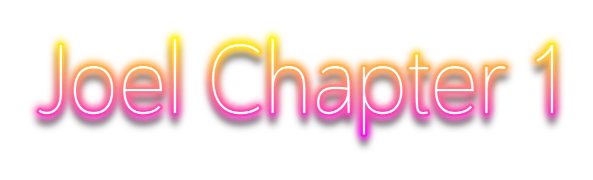
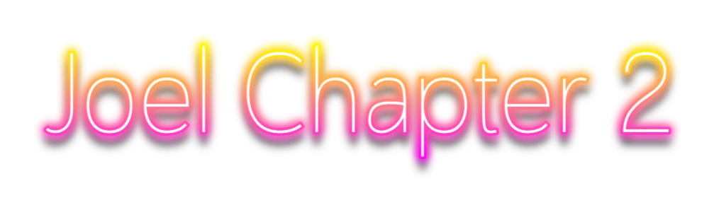
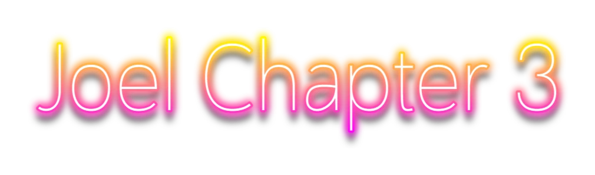
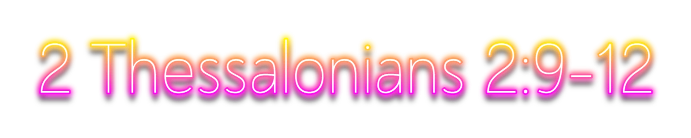

11 Serve the Lord with fear, and rejoice with trembling.

10 That at the name of Jesus every knee should bow, of things in heaven, and things in earth, and things under the earth;
11 And that every tongue should confess that Jesus Christ is Lord, to the glory of God the Father.
12 Wherefore, my beloved, as ye have always obeyed, not as in my presence only, but now much more in my absence, work out your own salvation with fear and trembling.
13 For it is God which worketh in you both to will and to do of his good pleasure.

4 And Jesus answered and said unto them, Take heed that no man deceive you.
5 For many shall come in my name, saying, I am Christ; and shall deceive many.
6 And ye shall hear of wars and rumours of wars: see that ye be not troubled: for all these things must come to pass, but the end is not yet.
7 For nation shall rise against nation, and kingdom against kingdom: and there shall be famines, and pestilences, and earthquakes, in divers places.
8 All these are the beginning of sorrows.
9 Then shall they deliver you up to be afflicted, and shall kill you: and ye shall be hated of all nations for my name’s sake.
10 And then shall many be offended, and shall betray one another, and shall hate one another.
11 And many false prophets shall rise, and shall deceive many.
12 And because iniquity shall abound, the love of many shall wax cold.
13 But he that shall endure unto the end, the same shall be saved.

7 And they asked him, saying, Master, but when shall these things be? and what sign will there be when these things shall come to pass?
8 And he said, Take heed that ye be not deceived: for many shall come in my name, saying, I am Christ; and the time draweth near: go ye not therefore after them.
9 But when ye shall hear of wars and commotions, be not terrified: for these things must first come to pass; but the end is not by and by.
10 Then said he unto them, Nation shall rise against nation, and kingdom against kingdom:
11 And great earthquakes shall be in divers places, and famines, and pestilences; and fearful sights and great signs shall there be from heaven.
12 But before all these, they shall lay their hands on you, and persecute you, delivering you up to the synagogues, and into prisons, being brought before kings and rulers for my name’s sake.
13 And it shall turn to you for a testimony.
14 Settle it therefore in your hearts, not to meditate before what ye shall answer:
15 For I will give you a mouth and wisdom, which all your adversaries shall not be able to gainsay nor resist.
16 And ye shall be betrayed both by parents, and brethren, and kinsfolks, and friends; and some of you shall they cause to be put to death.
17 And ye shall be hated of all men for my name’s sake.
18 But there shall not an hair of your head perish.
19 In your patience possess ye your souls.
20 And when ye shall see Jerusalem compassed with armies, then know that the desolation thereof is nigh.

5 And Jesus answering them began to say, Take heed lest any man deceive you:
6 For many shall come in my name, saying, I am Christ; and shall deceive many.
7 And when ye shall hear of wars and rumours of wars, be ye not troubled: for such things must needs be; but the end shall not be yet.
8 For nation shall rise against nation, and kingdom against kingdom: and there shall be earthquakes in divers places, and there shall be famines and troubles: these are the beginnings of sorrows.
9 But take heed to yourselves: for they shall deliver you up to councils; and in the synagogues ye shall be beaten: and ye shall be brought before rulers and kings for my sake, for a testimony against them.
10 And the gospel must first be published among all nations.
11 But when they shall lead you, and deliver you up, take no thought beforehand what ye shall speak, neither do ye premeditate: but whatsoever shall be given you in that hour, that speak ye: for it is not ye that speak, but the Holy Ghost.
12 Now the brother shall betray the brother to death, and the father the son; and children shall rise up against their parents, and shall cause them to be put to death.
13 And ye shall be hated of all men for my name’s sake: but he that shall endure unto the end, the same shall be saved.

THEREFORE seeing we have this ministry, as we have received mercy, we faint not;
2 But have renounced the hidden things of dishonesty, not walking in craftiness, nor handling the word of God deceitfully; but by manifestation of the truth commending ourselves to every man’s conscience in the sight of God.
3 But if our gospel be hid, it is hid to them that are lost:
4 In whom the god of this world hath blinded the minds of them which believe not, lest the light of the glorious gospel of Christ, who is the image of God, should shine unto them.
5 For we preach not ourselves, but Christ Jesus the Lord; and ourselves your servants for Jesus’ sake.
6 For God, who commanded the light to shine out of darkness, hath shined in our hearts, to give the light of the knowledge of the glory of God in the face of Jesus Christ.
7 But we have this treasure in earthen vessels, that the excellency of the power may be of God, and not of us.
8 We are troubled on every side, yet not distressed; we are perplexed, but not in despair;
9 Persecuted, but not forsaken; cast down, but not destroyed;
10 Always bearing about in the body the dying of the Lord Jesus, that the life also of Jesus might be made manifest in our body.

AND in that day thou shalt say, O Lord, I will praise thee: though thou wast angry with me, thine anger is turned away, and thou comfortedst me.
2 Behold, God is my salvation; I will trust, and not be afraid: for the Lord JEHOVAH is my strength and my song; he also is become my salvation.
3 Therefore with joy shall ye draw water out of the wells of salvation.
4 And in that day shall ye say, Praise the Lord, call upon his name, declare his doings among the people, make mention that his name is exalted.
5 Sing unto the Lord; for he hath done excellent things: this is known in all the earth.
6 Cry out and shout, thou inhabitant of Zion: for great is the Holy One of Israel in the midst of thee.
8 He will swallow up death in victory; and the Lord God will wipe away tears from off all faces; and the rebuke of his people shall he take away from off all the earth: for the Lord hath spoken it.
9 And it shall be said in that day, Lo, this is our God; we have waited for him, and he will save us: this is the Lord; we have waited for him, we will be glad and rejoice in his salvation.
Download this website: Here.